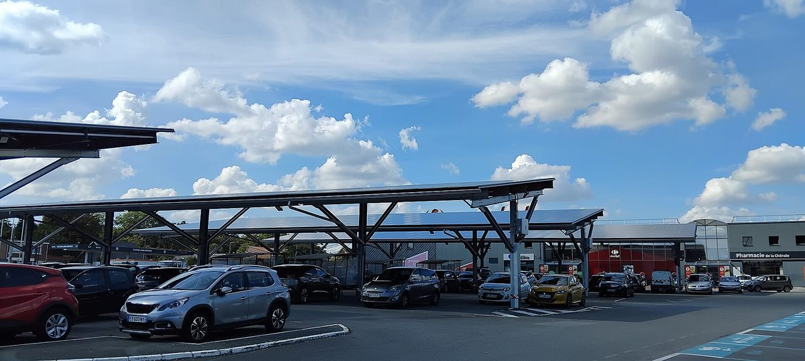

프랑스 앙제 근교 롱그네앙주, 공공시설·불 경기장에 태양광 그늘막 2곳 준공…연 686MWh로 약 300가구분 전기

지방정부 출자 혼합경제회사(SEM) 알테르 에네르지가 앙주 태양광 지역 프로그램으로 개발·투자·시공…시장, 이미 쓰는 땅에 세워 농지 지키고 화석연료 의존 줄인다
프랑스 서부 앙제 근교의 인구 6,700명 도시 롱그네앙주(Longuenée-en-Anjou)가 공공시설과 불(페탕크) 경기장에 태양광 그늘막 2곳을 세우고 10월 16일 준공식을 열었다. 시설 '에스파스 롱그네'(Espace Longuenée)에는 그늘막 4개가 2,000㎡를 덮어 해마다 524MWh를 만들고, 라 멤브롤쉬르롱그네(La Membrolle-sur-Longuenée) 지역의 불 경기장에는 648㎡ 규모 그늘막이 해마다 162MWh를 만든다. 두 시설의 발전량은 약 300가구가 쓰는 전기에 해당한다. 2024년 시작된 이 사업은 지역 혼합경제회사(SEM) 알테르 에네르지(Alter énergies)가 '앙주 태양광 지역'(Anjou territoire solaire) 프로그램으로 개발·투자·설계·시공을 맡았고, 운영사 SeeYouSun이 함께했다. 다니엘 라베르디(Daniel Raverdy) 시장은 "시는 화석연료 의존을 줄이고 싶다"며, 이미 조성된 땅에 설치해 농지를 지키면서 이용자들에게는 비와 더위를 피할 그늘도 준다고 설명했다.
시민에너지 관점
이미 쓰고 있는 땅 2,648㎡ 위에서 약 300가구분 전기를 만든 이 사례는 농지나 산을 깎지 않고도 공공 부지가 발전소가 될 수 있음을 보여 준다. 공공 부지 태양광이 결국 외부 사업자의 수익만 늘린다는 우려가 있지만, 이번 사업은 지방정부가 출자한 혼합경제회사가 개발과 투자를 맡았다는 점에서 다르다. 다만 발전 수익이 시와 주민에게 어떻게 돌아가는지는 알려지지 않았고, 공공 부지 태양광이 진짜 지역 자산이 되려면 주민이 출자해 수익을 나누는 구조까지 갖춰야 한다. 국내 지자체도 공공시설 부지부터 주민과 지역이 함께 소유하는 발전소로 열어야 한다.
출처: 마빌 앙제 2026-10-22 기자 미표기 원문 보기
仏アンジェ近郊ロングネ＝アン＝アンジュー、公共施設とブール場に太陽光発電シェード2カ所が完成…年686MWhで約300世帯分の電力
地方自治体が出資する混合経済会社（SEM）アルテール・エネルジーがアンジュー太陽光地域プログラムで開発・投資・施工…市長、既に使っている土地に設置して農地を守り化石燃料への依存を減らす
フランス西部アンジェ近郊の人口6,700人の町ロングネ＝アン＝アンジュー（Longuenée-en-Anjou）が、公共施設とブール（ペタンク）場に太陽光発電シェード2カ所を設置し、10月16日に完成式を開いた。施設「エスパス・ロングネ」（Espace Longuenée）ではシェード4基が2,000㎡を覆って年間524MWhを発電し、ラ・メンブロール＝シュル＝ロングネ（La Membrolle-sur-Longuenée）地区のブール場では648㎡のシェードが年間162MWhを発電する。2カ所の発電量は約300世帯が使う電力に相当する。2024年に始まったこの事業は、地域の混合経済会社（SEM）アルテール・エネルジー（Alter énergies）が「アンジュー太陽光地域」（Anjou territoire solaire）プログラムで開発・投資・設計・施工を担い、運営会社SeeYouSunが加わった。ダニエル・ラヴェルディ（Daniel Raverdy）市長は「町は化石燃料への依存を減らしたい」と述べ、既に整備された土地に設置することで農地を守りつつ、利用者には雨や暑さをしのぐ日陰も提供すると説明した。
市民エネルギーの視点
既に使われている2,648㎡の土地の上で約300世帯分の電力を生み出したこの事例は、農地や山を削らなくても公共の土地が発電所になりうることを示している。公共用地の太陽光は結局外部事業者の利益を増やすだけだとの懸念もあるが、今回の事業は地方自治体が出資する混合経済会社が開発と投資を担った点で異なる。ただ、発電収益が町や住民にどう還元されるかは明らかになっておらず、公共用地の太陽光が本当の地域資産になるには、住民が出資して収益を分け合う仕組みまで備える必要がある。韓国の自治体も、公共施設の敷地から住民と地域が共に所有する発電所として開放すべきだ。
出典: マヴィル・アンジェ 2026-10-22 記者名なし 原文を読む
法国昂热近郊隆格内昂安茹在公共设施和滚球场建成2处光伏遮阳棚…年发电686MWh，约合300户用电
地方政府出资的混合经济公司（SEM）Alter énergies通过安茹太阳能领地计划负责开发、投资和施工…市长称建在已利用土地上，保护农地并减少对化石燃料的依赖
法国西部昂热近郊、人口6,700人的市镇隆格内昂安茹（Longuenée-en-Anjou）在公共设施和滚球（法式地滚球）场建起2处光伏遮阳棚，并于10月16日举行了落成仪式。在设施“隆格内空间”（Espace Longuenée），4座遮阳棚覆盖2,000㎡，每年发电524MWh；在拉梅姆布罗勒叙尔隆格内（La Membrolle-sur-Longuenée）地区的滚球场，648㎡的遮阳棚每年发电162MWh。两处设施的发电量约相当于300户家庭的用电。该项目于2024年启动，由当地混合经济公司（SEM）Alter énergies通过“安茹太阳能领地”（Anjou territoire solaire）计划负责开发、投资、设计和施工，运营商SeeYouSun参与其中。市长Daniel Raverdy表示：“本市希望减少对化石燃料的依赖。”他说，遮阳棚建在已经开发的土地上，既保护了农地，也为使用者提供了遮雨避暑的地方。
市民能源视角
在已经利用的2,648㎡土地上产出约300户用电，这一案例说明，不必占用农地或开山，公共用地也能成为发电站。有人担心公共用地光伏最终只会增加外部开发商的收益，但这个项目由地方政府出资的混合经济公司负责开发和投资，这一点有所不同。不过，发电收益如何回馈给市镇和居民尚不清楚；公共用地光伏要真正成为地方资产，还需要建立居民出资、分享收益的结构。韩国地方政府也应从公共设施用地做起，把它们开放为居民和地方共同拥有的发电站。
来源: Maville昂热 2026-10-22 未署名 查看原文
Longuenée-en-Anjou near Angers opens two solar canopies over a public facility and a boules ground, producing 686MWh a year, enough for about 300 households
Local mixed-economy company Alter énergies, backed by local government, developed, financed and built them under its Anjou territoire solaire programme; the mayor says using land already in use protects farmland and cuts fossil fuel dependence
Longuenée-en-Anjou, a town of 6,700 people near Angers in western France, has installed two solar canopies over a public facility and a boules (pétanque) ground and held an opening ceremony on October 16. At the Espace Longuenée, four canopies cover 2,000 square metres and produce 524MWh a year, while a 648-square-metre canopy over the boules ground in La Membrolle-sur-Longuenée produces 162MWh a year. Together the two installations generate the equivalent of the electricity needs of about 300 households. The project, launched in 2024, was developed, financed, designed and built by the local mixed-economy company (SEM) Alter énergies under its Anjou territoire solaire programme, with operator SeeYouSun also involved. "The town wants to reduce its dependence on fossil fuels," said Mayor Daniel Raverdy, explaining that building on land that is already developed protects farmland while giving users shelter from rain and heat.
Citizen Energy View
Producing power for about 300 households on 2,648 square metres of land already in use shows that public land can become a power plant without clearing farmland or hillsides. Some worry that solar on public land ends up only boosting outside developers' profits, but this project differs in that a mixed-economy company funded by local government handled development and investment. Still, how the revenue returns to the town and its residents has not been made public, and for solar on public land to become a true community asset, it needs a structure in which residents invest and share the returns. Local governments in Korea should likewise open up public facility sites, starting now, as power plants owned jointly by residents and their communities.
Source: Angers.maville.com 2026-10-22 No byline Read the original